Ask any four students to come with a rope to form a rectangle ABCD as shown in Fig 2.2(i). Students standing at C and D are asked to move 4 equal steps to their left to form the shape as shown in Fig. 2.2(ii). Now, the new shape formed is called parallelogram. The pair of sides AB and CD are parallel to each other and the other pair of sides BC and AD are also parallel to each other. The length of the parallel sides are found to be equal.
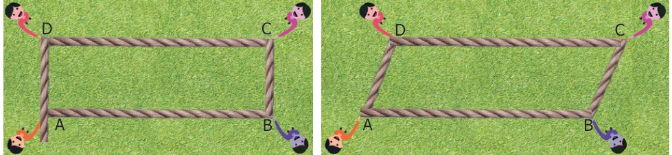
Hence, we can conclude that a parallelogram is a four sided closed shape, in which opposite sides are parallel and equal.
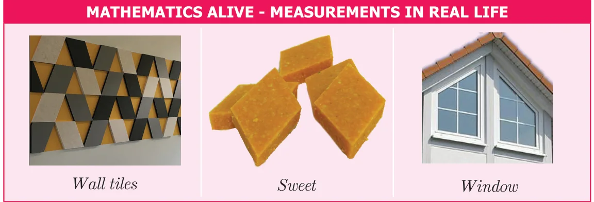
2.2.1 Area and Perimeter of the Parallelogram
Draw a parallelogram on a graph sheet as shown in Fig.2.3(i) and cut it. Draw a perpendicular line from one vertex to the opposite side. Cut the triangle and shift the triangle to the other side of the parallelogram as shown in Fig.2.3(ii). What shape is seen now? It is a rectangle as in Fig.2.3(iii). Hence, the area of the parallelogram is the same as that of the rectangle.
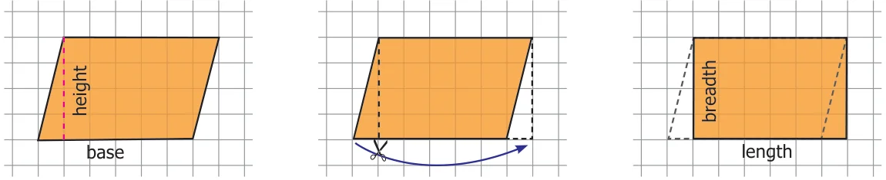
Therefore, area of the rectangle
= length \(\times\) breadth
= base \(\times\) height sq.units.
\(= b \times h\) sq.units.
= Area of the parallelogram.
Further, the perimeter of a parallelogram is the sum of the lengths of the four sides.
Think
- Explain the area of the parallelogram as sum of the areas of the two triangles.
- A rectangle is a parallelogram but a parallelogram is not a rectangle. Why?
Try these
Count the squares and find the area of the following parallelograms by converting those into rectangles of the same area (without changing the base and height).
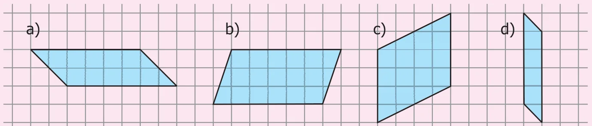
a.\(\underline{\qquad}\) sq.units b.\(\underline{\qquad}\) sq.units c.\(\underline{\qquad}\) sq.units d.\(\underline{\qquad}\) sq.units
Draw the heights for the given parallelograms and mark the measure of their bases and find the area. Analyse your result.
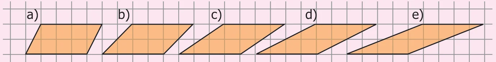
Find the area of the following parallelograms by measuring their base and height, using formula.
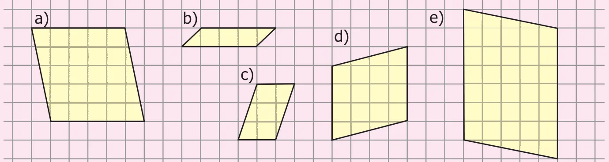
a.\(\underline{\qquad}\) sq. units b.\(\underline{\qquad}\) sq. units c.\(\underline{\qquad}\) sq. units d.\(\underline{\qquad}\) sq. units e.\(\underline{\qquad}\) sq. units
Draw as many parallelograms as possible in a grid sheet with the area 20 square units each.
Example 2.1
Find the area and perimeter of the parallelogram given in the figures.
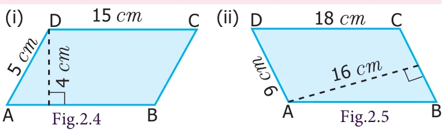
Solution
(i) From the Fig.2.4
Base of a parallelogram \((b) = 15\) cm, Height of a parallelogram \((h) = 4\) cm
Area of a parallelogram \(= b \times h\) sq.units. Therefore, Area \(= 15 \times 4 = 60\) sq. cm.
Thus, area of the parallelogram is 60 sq. cm.
Perimeter of the parallelogram = sum of the length of the four sides.
\(= (15+5+15+5) = 40\) cm.
(ii) From the Fig.2.5
Base of a parallelogram \((b) = 9\) cm, Height of a parallelogram \((h) = 16\) cm.
Area of a parallelogram \(= b \times h\) sq.units Therefore, Area \(= 9 \times 16 = 144\) sq. cm
Thus, area of the parallelogram is 144 sq. cm.
Perimeter of the parallelogram = sum of the length of the four sides.
\(= (18+9+18+9) = 54\) cm.
Example 2.2
One of the sides and the corresponding height of the parallelogram are 12 m and 8 m respectively. Find the area of the parallelogram.
Solution
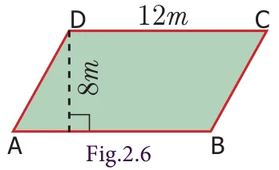
Given: \(b = 12\) m, \(h = 8\) m
Area of the parallelogram \(= b \times h\) sq.units
\(= 12 \times 8 = 96\) sq.m
Therefore, Area of the parallelogram \(= 96\) sq.m.
Example 2.3
Find the height '\(h\)' of the parallelogram whose area and base are 368 sq. cm and 23 cm respectively.
Solution
Given: Area \(= 368\) sq. cm , base \(b = 23\) cm
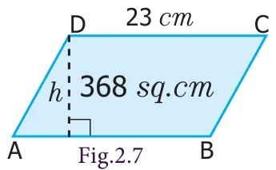
Area of the parallelogram \(= 368\) sq. cm
\(b \times h = 368\)
\(23 \times h = 368\)
\(h = \frac{368}{23} = 16\) cm
Thus, the height of the parallelogram \(= 16\) cm.
Example 2.4
A parallelogram has adjacent sides 12 cm and 9 cm. If the distance between its shorter sides is 8 cm, find the distance between its longer side.
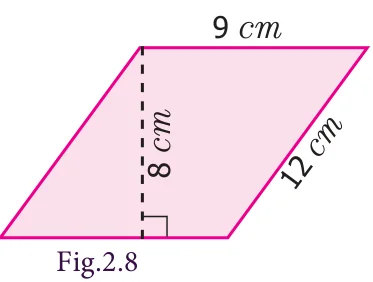
Solution
Given that the adjacent sides of parallelogram are 12 cm and 9 cm
If we choose the shorter side as base, that is \(b = 9\) cm then distance between the shorter sides is height, that is \(h = 8\) cm
Area of parallelogram \(= b \times h\) sq.units \(= 9 \times 8 = 72\) sq. cm.
Again, if we choose longer side as base, that is \(b = 12\) cm then distance between longer sides is height. Let it be '\(h\)' units.
We know that, the area of the parellelogram \(= 72\) sq.cm
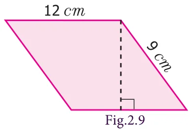
\(b \times h = 72\)
\(12 \times h = 72\)
\(h = \frac{72}{12} = 6\) cm
Therefore, the distance between the longer sides \(= 6\) cm.
Example 2.5
The base of the parallelogram is thrice its height. If the area is 192 sq. cm, find the base and height.
Solution
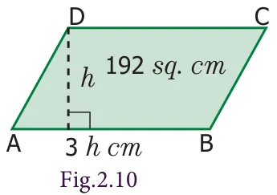
Let the height of the parallelogram \(= h\) cm
Then the base of the parallelogram \(= 3h\) cm
Area of the parallelogram \(= 192\) sq. cm
\(b \times h = 192\)
\(3h \times h = 192\)
\(3h^{2} = 192\)
\(h^{2} = 64\)
\(h \times h = 8 \times 8\)
\(h = 8\) cm
base \(= 3h = 3 \times 8 = 24\) cm
Therefore, base of the parallelogram is 24 cm and height is 8 cm.
Do you know?
Most of the bridges are constructed using parallelogram as the structural design (For example, Pamban Bridge in Rameswaram)
Engineers use properties of parallelograms to build and repair bridges.